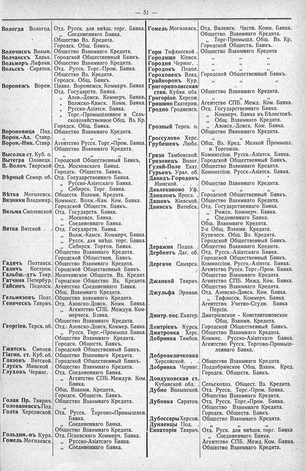

Лист источника 97
Скан

Распознанный текст
— 51 —
Вологда Вологод. Отд. Русск. для внѣш. торг. Банка.
„ Соединеннаго Банка.
Общество Вз. Кредита.
Городск. Общ. Банкъ.
Волочискъ Волын. Общество Взаимнаго Кредита.
Волчанскъ Харьк. Городской Общественный Банкъ.
Вольмаръ Лифлян. Общество Взаимнаго Кредита.
Вольскъ Саратов. Отд. Русск. Торг.-Пром. Банка.
Общество Вз. Кредита.
Городск. Общ. Банкъ.
Воронежъ Ворон. Правл. Воронежск. Коммерч. Банка.
Отд. Государств. Банка.
„ Азов.-Донск. Коммерч. Банка.
„ Волжско-Камск. Комм. Банка.
„ Русско-Азіатск. Банка.
„ Торг.-Промышленное и Сель-
скохозяйственное Общ. Вз. Кр.
Городск. Общ. Банка.
Вороновица Под. Общество Взаимнаго Кредита.
Ворон.-Ал. Ставр. „ „ „
Ворон.-Ник. Ставр. Агентство Русск. Торг.-Пром. Банка.
Общество Взаимнаго Кредита.
Высолка ст. Куб. о. „ „ „
Вытегра Олонецк. Городской Общественный Банкъ,
В.-Волоч. Тверской Отд. Московскаго Банка.
Городск. Обществ. Банкъ.
Вѣрный Семир. об. Отд. Государственнаго Банка.
„ Русско-Азіатскаго Банка.
„ Сибирск. Торг. Банка.
Вѣтка Могилевск. Обществ. Взаимн. Кредита.
Вязники Владимир. Коммисс. Волж.-Кам. Ком. Банка.
Городской Обществ. Банкъ.
Вязьма Смоленской Отд. Государств. Банка.
„ Московск. Банка.
„ Соединеннаго Банка.
Вятка Вятской . Отд. Государств. Банка.
„ Волж.-Камск. Коммерч. Банка.
„ Русск. для внѣш. торг. Банка.
„ Сибирск. Торгов. Банка.
Общество Взаимнаго Кредита.
Городской Обществен. Банкъ.
Гадячъ Полтавск. Общество Взаимнаго Кредита.
Галичъ Костром. Городской Общественный Банкъ.
Гальбш.-дтъ Тавр. Молочанское Обществ. Вз. Кредит.
Гатчина Петербург. Городское Общество Вз. Кредита.
Гайсинъ Подолск. Агентство Соединеннаго Банка.
Общ. Взаимнаго Кредита.
Гельмязовъ Полт. Общество взаимнаго Кредита.
Геническъ Таврич. Отд. Азовско-Донск. Комм. Банка.
„ Агентство СПБ. Междун. Ком-
мерческ. Банка.
Общество Взаимнаго Кредита.
Георгіев. Терск. об. Отд.: Азовско-Донск. Коммер. Банка.
„ Русск. Торг.-Промышл. Банка.
Общество Взаимнаго Кредита.
Городск. Обществ. Банкъ.
Гжатскъ Смолен. Городской Общественный Банкъ.
Гіагин. ст. Куб. об. Общество Взаимнаго Кредита.
Глазовъ Вятской. Городской Общественный Банкъ.
Глускъ Минской . Общество Взаимнаго Кредита.
Глуховъ Черниг. Отд. Соединеннаго Банка.
„ Агентство СПБ. Междун. Ком.
Банка.
Общ. Взаимн. Кредита.
Городск. Обществ. Банкъ.
Голая Пр. Таврич. Общество Взаимнаго Кредита.
Голованевскъ Под. „ „ „
Голта Херсонской. Отд. Русск. Торгово-Промышлен.
Банка.
Соединеннаго Банка.
Общество Взаимнаго Кредита.
Гольдин.-нъ Курл. Отд. Псковскаго Коммерч. Банка.
Гомель Могилевск. „ Русско-Азіатскаго Банка.
„ Соединеннаго Банка.
Гомель Могилевск. Отд. Виленск. Частн. Комм. Банка.
Общество Взаимнаго Кредита.
„ Торг-Промышл. Общ. Вз. Кр.
Городской Обществ. Банкъ.
Гори Тифлисской . Общество Взаимнаго Кредита
Городище Кіевск. „ „ „
Городня Черниг. „ „ „
Городокъ Подол. „ „ „
Гороховецъ Влад. Городской Общественный Банкъ.
Грайворонъ Кур. „ „ „
Григориполисская
стан. Кубан. обл. Общество Взаимнаго Кредита.
Григоріоп. Херсон. „ „ „
Гришино Екатерин. Агентство СПБ. Межд. Ком. Банка.
Гродно Гродненск. Отд. Государственнаго Банка.
„ Коммерч. Банка въ Бѣлостокѣ.
„ Общ. Взаимнаго Кредита.
Грозный Терск. о. „ Азовск.-Донск. Ком. Банка.
Общество Взаимнаго Кредита.
Гроссулово Херс. „ „ „
Грубешевъ Любл. Общ. Вз. Кред. Мелкой Промышл.
и Торговли.
Грязи Тамбовской. Коммиссіон. Русск.-Азіатск. Банка.
Грязовецъ Волог. Городской Общественный Банкъ.
Гуляй-Поле Екат. Общество Взаимнаго Кредита.
Гурьевъ Урал. об. Коммиссіон. Русск.-Азіатск. Банка.
Давидъ-Городокъ
Минской. Общество Взаимнаго Кредита.
Давлеканово Уф. „ „ „
Даниловъ Яросл. Городской Общественный Банкъ.
Дашевъ Кіевской. Общество Взаимнаго Кредита.
Двинскъ Витебск. Отд. Государственнаго Банка.
„ Рижск. Коммерч. Банка.
„ Соединеннаго Банка.
Общ. Взаимнаго Кредита.
2-е Общ. Взаимн. Кредита.
Купеческ. Общ. Вз. Кредита.
Городской Общественный Банкъ.
Деражня Подол. Общество Взаимнаго Кредита.
Дербентъ Даг. об. Отд. Русск.-Азіатскаго Банка.
Городской Общественный Банкъ.
Дергачи Самарск. Коммиссіон. Русск.-Азіатск. Банка.
Агентство Русск. Торг.-Пром. Банка.
Общество Взаимнаго Кредита.
Джанкой Таврич. Агентство СПБ. Межд. Ком. Банка.
Общество Взаимнаго Кредита.
Джульфа Эриван. Отд. Азовско-Донск. Ком. Банка.
„ Тифлисск. Коммерч. Банка.
Агентство Учетно-Ссудн. Банка
Персіи.
Дмитр. пос. Екатер. Дмитріевское - Константиновское
Общ. Взаимн. Кредита.
Дмитріевъ Курск. Городской Общественный Банкъ.
Дмитровка Херс. Общество Взаимнаго Кредита.
Добринка Тамбов. Коммис. Русско-Азіатскаго Банка.
Агентство Русск. Торгово-Промыш-
леннаго Банка.
Добровеличковка
Херсонской. Общество Взаимнаго Кредита.
Добрянка Черниг. Поддобрянское Общ. Взаим. Кред.
Городск. Обществ. Банкъ.
Дондуковская ст.
Кубанской обл. . Сельскохоз. Общест. Вз. Кредита.
Дубно Волыпской. Отд. Русск. Торг.-Пром. Банка.
Общество Взаимнаго Кредита.
Дубовка Саратов. Отд. Русск. Торг.-Пром. Банка.
Общество Взаимнаго Кредита.
Городск. Обществ. Банкъ.
ДубоссарыХерсон. Общество Взаимнаго Кредита.
Дунаевцы Под. „ „ „
Евпаторія Таврич. Отд. Руск. для внѣшн. торг. Банка
„ Соединеннаго Банка.
Агентство СПБ. Межд. Ком. Банка.
Общество Взаимнаго Кредита.